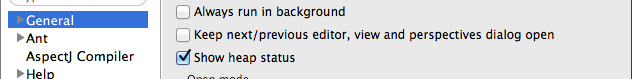

Advanced Setup
This page contains information to help you configure Eclipse and Scala IDE, to increase performances and ease-of-use.
Eclipse Configuration
The default Eclipse heap configuration is often inadequate for the Scala IDE. It is strongly recommended to edit the eclipse/eclipse.ini (eclipse/Eclipse.app/Contents/MacOS/eclipse.ini on Mac osX) file and add the following lines to increase various heap limits and virtual machine options:
--launcher.XXMaxPermSize
256m
-vmargs
-Xms256m
-Xmx1024m
-XX:PermSize=64m
-Xss1M
-server
-XX:+DoEscapeAnalysis
One recent Oracle JVM, the following might also be beneficial:
-XX:+UseConcMarkSweepGC
As is the following on Oracle 64-bits JVM:
-XX:+UseCompressedOops
Required Preferences
JDT Weaving
Scala IDE uses AOP to tweak the Eclipse JDT, so JDT weaving has to be enable. Otherwise, Scala files would be managed as Java files.
It is set in the
JDT Weavingsection of Scala Setup Diagnostics dialog [2]. JDT Weaving should be checked (and disabled, to prevent accidental changes). If it is not the case, click to enable it.
Optional Preferences
Heap Status
When the memory usage nears the limit, the Garbage Collector activity increases (when the compiler runs, ...) and system slows down. It is good to keep a eye on the heap status. It is possible by enabling
Show heap statusin theGeneralsection [1].Limit Simultaneously Open Editors
Having too many editors open can claim a lot of memory. Unless you are an exceptional multi-tasker or you use a task-focused interface such as Mylyn, you may want to limit the number of simultaneously opened editors in the
Generalsection [1].Deactivate Automatic Java Content Assist
Since Scala-IDE is built over JDT, the Java Content Assist is enabled by default for Scala files, even though it is not relevant for Scala language files development. You can safely deactivate it if most of your edition is done in Scala files.
Note
Naturally, if you have a mixed Scala/Java project, this may not be a good idea : proceed at your own risk.
Activate Completion
You should enable completion however — and you may even want to activate word proposals, if you don’t want to have to hit several shortcuts to complete what you type.


Performance
Garbage Collection activity and swap can be really bad for performance. It can trigger Eclipse freezes and cuase a general system slow down.
Monitoring what is happening is the best option to keep a healthy system:
- to monitor CPU and swap, use your native system monitor (some of the other system monitors are big resource users themselves).
- to monitor Garbage Collector activity, use visualvm on the eclipse instance. It is a profiling tool provided with jdk 1.6.x. It is possible also to get a feel of the memory usage with the heap status bar Optional Preferences in Eclipse.
Depending of the problem, the memory allocated to the JVM can be increased, or some of the other application closed (like the web browser, or some flash application, ...).
Suggested interesting keyboard shortcuts
You may want to head out to our Suggested Shortcuts page to get a list of shortcuts that will speed up your Scala development.
Additional Links
- Optimizing Eclipse performances from Normation.
- What are the best JVM settings for Eclipse? from Stack Overflow forum
- My Eclipse Setup from davidB
Footnotes
| [1] | (1, 2) The Eclipse preferences are accessible using Windows → Preferences (or Eclipse → Preferences on Mac OS X). |
| [2] | The Scala Diagnostics dialog is accessible using Scala → Run Setup Diagnostics. |


{kind=link}
{kind=link}
{kind=link}